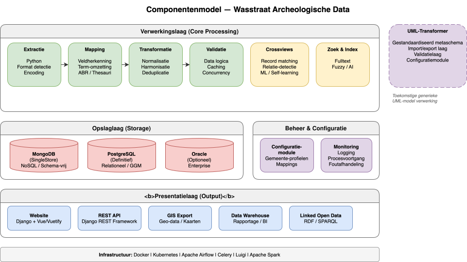

Componentenmodel¶
Overzicht¶
Dit document beschrijft hoe de verschillende modules en services van het Wasstraat-systeem samenwerken. Het componentenmodel toont de relaties en afhankelijkheden tussen technische en functionele eenheden.

Kerncomponenten¶
Extractie Module¶
Verantwoordelijkheid: Conversie van brondataformaten naar gestandaardiseerde formaten.
Ondersteund door: - Python extractie-scripts - Mapping-engine voor term/veld-herkenning - Validatieroutines
Gegevensuitgang: Ruw format naar MongoDB/SingleStore
Transformatie Module¶
Verantwoordelijkheid: Normalisering en harmonisering van gegevens.
Kernfuncties: - ABR-harmonisering (thesaurus-afstemming) - Datumformatstandardisatie - Locatie-deduplicatie - Spellingstandardisatie
Gegevensuitgang: Genormaliseerde records naar PostgreSQL/Oracle
Handmatige Schoonmaakinterface¶
Verantwoordelijkheid: Menselijke validatie en correctie van kritieke gegevenselementen.
Specifieke Taken: - Controle van waardeconflicten - Aanpassing van foutieve mappings - Disambiguering van ambigue gegevens
Gegevensinteractie: Directe updates in PostgreSQL/Oracle met audit logging
Clientonderhoudinterface¶
Verantwoordelijkheid: Beheer van systeemconfiguratie en metadata.
Specifieke Taken: - Bronconfiguratie - Gebruiker- en permissiebeheer - Mapping-sjablonen beheren - Validatieregel-management
Gegevensinteractie: Configuratietabellen in PostgreSQL/Oracle
Data Warehouse / Reporting¶
Verantwoordelijkheid: Analytische weergaven en rapportage van historische data.
Ondersteund door: - Snowflake gegevens-consolidering - Apache Spark voor ETL - RShiny voor interactieve dashboards - Jupyter voor ad-hoc analyses
Gegevensingang: Read-only kopieën uit definitieve opslag
Website & API's¶
Verantwoordelijkheid: Publieke toegang tot archeologische gegevens.
Functies: - REST API's voor gegevenstoegang - Web UI zoeken/browse - Linked Open Data exports - Fulltext search
Gegevensingang: PostgreSQL/Oracle via SQLAlchemy ORM
GIS-Systeem¶
Verantwoordelijkheid: Geografische visualisatie en spatiale analyses.
Functies: - WMS/WFS geo-services - GeoJSON exports - Kaartgebaseerde interfaces - Spatiale queries
Gegevensingang: PostGIS-extensie van PostgreSQL
Ondersteunende Systemen¶
Extractie & Transformatie¶
| Component | Functie |
|---|---|
| Python Pandas | Data wrangling en transformatie |
| RDFLib | RDF-processing voor semantische mapping |
| SQLAlchemy | ORM voor database-agnostische query's |
| Alembic | Database schema versioning & migraties |
Data Access & Semantiek¶
| Component | Functie |
|---|---|
| Jinja2 | Template-engine voor dynamische queries |
| Fulltext Search Engine | Polymorfe, vakgebied-bewuste zoek-indexering |
| Crossviews | Cross-source querying zonder duplicatie |
Web Framework¶
| Component | Functie |
|---|---|
| Django | Backend web framework |
| Vue/Vuetify | Frontend JavaScript framework |
| REST Framework | API architecture |
Storing¶
| Component | Functie |
|---|---|
| MongoDB | NoSQL opslag voor ruw data |
| SingleStore | Kolom-opslag voor analytische queries |
| PostgreSQL | Relationele database (voorkeur) |
| Oracle | Relationele database (legacy) |
Orchestratie¶
| Component | Functie |
|---|---|
| Airflow | Workflow orchestratie en scheduling |
| Luigi | Task dependency management |
| Celery | Asynchrone taakuitvoering |
Infrastructure¶
| Component | Functie |
|---|---|
| Docker | Container-verpakking |
| Kubernetes | Container orchestratie & deployment |
Analyse & Visualisatie¶
| Component | Functie |
|---|---|
| Apache Spark | Distributed ETL processing |
| RShiny | Interactieve dashboards |
| Jupyter | Notebook-gebaseerde analyses |
UML-Transformer Project (2024)¶
Een specialist-component voor generieke transformatie van UML-gemodelleerde datamodellen:
Onderdelen¶
- Metaschema Repository: Opslag van UML-modellen in kanonieke vorm
- Import/Export Laag: Conversie tussen UML-formaten en interne representatie
- Validatie Laag: Schema-validatie tegen UML-definities
- Configuratie Module: Mapping van UML naar fysieke databaseschema's
Integratie¶
De UML-Transformer ondersteunt cross-model mapping: - CIDOC CRM ↔ Lokale gegevensmodellen - CRMarchaeo ↔ Project-specifieke modellen - CRMsci ↔ Laboratorium-gemodelleerde data - GGM (Gemeentelijk Gegevensmodel) ↔ Administratieve data
Informatiestroom tussen Componenten¶
Bronsystemen
↓ (Extractie Module)
MongoDB/SingleStore (Ruw)
↓ (Transformatie Module)
PostgreSQL/Oracle (Definitief)
↙ ↓ ↘
/ | \
GIS Web Data
Warehouse
Handmatige Schoonmaak ⟷ PostgreSQL/Oracle
Clientonderhoud ⟷ Configuratietabellen
Betrouwbaarheid & Redundantie¶
De componentenarchitectuur ondersteunt: - Separatie van concerns: Componenten hebben duidelijk omgrensd verantwoordelijkheden - Decomponeerbaarheid: Componenten kunnen onafhankelijk getest en geüpdatet worden - Redundantie: Kritieke componenten kunnen gerepliceerd worden in Kubernetes - Failover: Omleiding naar backup-systemen bij uitval